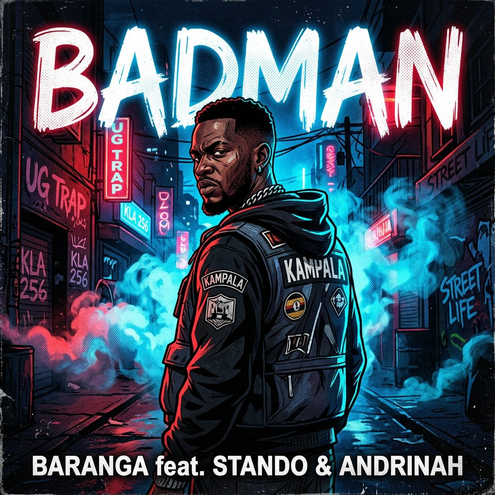
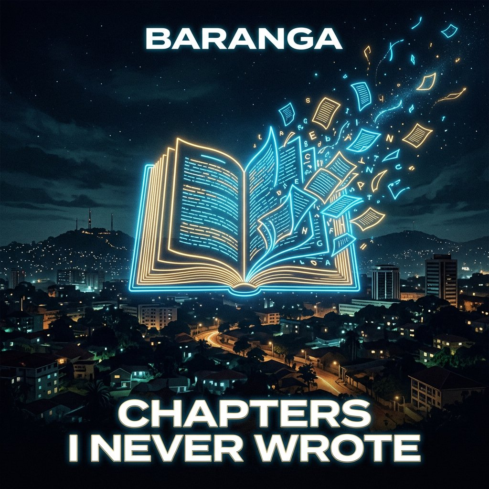
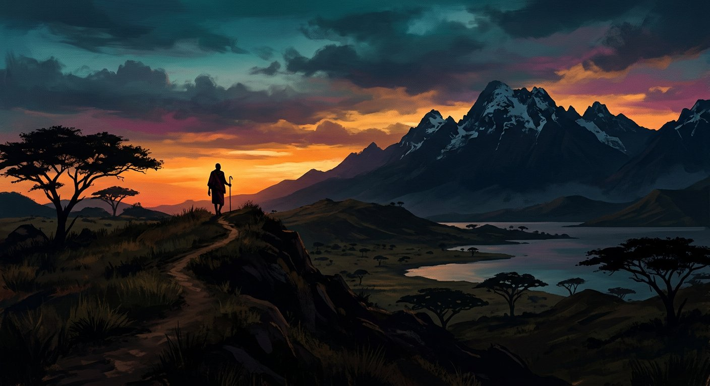
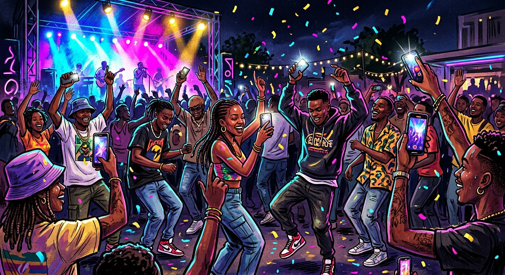

Presented by: Campaign Engineer Studio × Baranga Team
Date: November 2026 · Kampala, Uganda
Album cycle: CHAPTERS I NEVER WROTE (8 May 2026)
Portrait & cover art in this deck are AI-generated concept visuals, not official photography. Facts: Spotify · Apple Music · Shazam · YouTube · NRG Radio UG.
BARANGA — 12-Week CampaignUG01 / 18
Open with energy, not biography. One line: “This is Baranga — a Munyoro kid from western Uganda whose debut single SALO was written in high school, and whose single Badman is now everywhere on East African Gen Z feeds. In the next 12 weeks we turn that spark into a sustainable artist engine.” The deck is designed dark/neon on purpose — it reads like a music campaign, not a corporate review. Ground rules: every fact shown is from public sources (Spotify, Apple Music, Shazam, YouTube, NRG Radio UG); every number marked “~” is an approximate figure to be re-verified in Spotify for Artists before launch. Hold questions until slide 16 (metrics) — people always ask about the numbers there.
Agenda
What we’ll cover
01
Who is the ArtistOrigin, name meaning & current momentum
02
Campaign ObjectivesSMART goals across awareness, streams & fan growth
03
Audience ProfileUgandan / East African Gen Z, 16–25
Success Metrics & Next StepsKPIs, tooling & launch checklist



BARANGA — AgendaUG02 / 18
Run this slide in under 40 seconds — it’s a map, not a story. Flag the two slides people should watch closely: 8 (positioning) and 12–15 (the calendar) — that’s where strategy becomes execution. Mention that every “Visual Suggestion” from the planning doc is now baked into the design of the deck itself, so this room is seeing the moodboard, not just reading about it.
Career began 2023. Debut single “SALO” (24 Aug 2024) — written and released while still in high school.
SALO is his first song built on a true personal story — widely understood to be about an affair; it established the “real stories, real chapters” identity.
From western Uganda; Munyoro heritage — self-described “Motorola by tribe” energy: tough, loud, proud.
The name “Baranga” fuses his hometown with the idea of “spreading the good news” — i.e. spreading good music.
Inspired by an uncle already in the music industry — music was the family business long before streaming.
Munyoro prideHigh-school origin storyWestern Uganda → Kampala“Spreading the good news”
Signature line
“You know it’s Baranga.”
Western Uganda — Ruwenzori foothills & the lakes. Baranga’s roots: Munyoro country, now exporting sound to Kampala & beyond.
BARANGA — Who is the ArtistUG03 / 18
Tell the SALO story slowly — it’s the single most persuasive thing in the room. A teenager writes a song about a real affair, self-releases it, and it breaks through. That’s why the positioning leans on authenticity rather than polish. Note the dual meaning of the name and repeat it: hometown + “spreading the good news.” If asked about the uncle, keep it warm and brief — “music was in the family long before the streams were.” Avoid overclaiming listener numbers here; that lives on slide 4.
Who is the Artist · 2 of 2
The catalogue & current status
~4,042Spotify monthly listeners*
311K+“Badman” streams*
~68KYouTube — Badman visualizer*
*Approximate public figures at time of research (late 2026). Re-verify in Spotify for Artists / YouTube Studio before launch; never quote in paid media without refreshing.
Key releases
Release
Year
Notes
SALO
2024
Debut single · 24 Aug 2024 · written in high school · true story
Badman (feat. STANDO & Andrinah)
2025
Biggest hit — released 3 May 2025 · 5844655 Records DK · Gen Z chokehold · strong Shazam
Party Riddim
2025
Feat. Ace Kaawa · dance/party record
Do you? · Confirm
2025
Singles building the trap/Afro-pop lane
CHAPTERS I NEVER WROTE
2026
7-track debut album · 8 May 2026
Album tracklist — CHAPTERS I NEVER WROTE
01 PARADISE (TUNGI)02 WAGWUAN (MR FALLBACK & MELLAN KUNTA)03 KAMPALA (DEEJAY KLVN)04 LOST CAUSE (KRAVYNZ & KING AVO)05 BREATHE (MR FALLBACK)06 JAGERMEISTER (KING AVO)07 FREAKY
@_baranga across platformsYouTube visualizersPeer collabs: STANDO · Andrinah · Ace Kaawa · King Avo · TUNGI
BARANGA — Music & MomentumUG04 / 18
Land three proof points, in this order: (1) Badman — a 2025 record already out-streaming expectations and Shazam-ing organically; (2) the album — CHAPTERS I NEVER WROTE dropped 8 May 2026 with seven chapters and star features, so this campaign rides an album cycle, not a one-off single; (3) velocity — roughly 4k monthly listeners today means headroom, not saturation. If someone challenges the 311K figure, concede gracefully: “public counters move; treat it as order-of-magnitude, and we refresh all numbers in week 0.” Close the loop: this is an artist mid-breakout, and the next 12 weeks decide whether the spike flattens or compounds.
Campaign Objectives
From spark to system
Overall goal: build sustainable momentum for BARANGA as the authentic Gen Z “Badman” voice over 12 weeks — measured, not vibes.
01
Awareness ×2–3Grow monthly listeners & video views 2–3× baseline by Week 12; Badman + 1 album deep cut trending on UG TikTok/Reels.
02
Streams +50–100%Lift Spotify streams & saves 50–100%+ over the 12-week window; album tracks compounding week-over-week.
UGC EngineSeed ≥500 user videos using #BarangaBadman; 3 recurring challenge formats; 20+ creator duets/stitches.
05
Industry Openings3+ playlist adds (editorial/independent UG & East Africa), 2+ radio interviews, 1 live performance or showcase booked.
06
Long-Term EngineRepeatable content system + release calendar for 2027 singles; management/label-ready campaign report.
BARANGA — ObjectivesUG05 / 18
Frame every objective as SMART on the whiteboard: each has a number, a deadline (end of Week 12) and a source of truth. Stress sequencing — awareness feeds streams, streams feed follows, follows feed UGC, UGC feeds industry leverage. If the room only remembers one line: “We are not buying fame; we are compounding a fanbase that already exists.” Objectives 05 and 06 are the ones management cares about most — playlist adds and a booked showcase are the tangible wins that unlock the next conversation about touring or distribution.
Audience Profile
Gen Z, Kampala-first, East-Africa-ready
✓ What they want
Authentic, unpolished voices — not industry robots
Party records they can dance to at 2AM in Kabalagala
Local flavor: Luganda/Runyoro inflections, Kampala slang
Relatable origin stories they can quote and share
Sound they can claim as “ours” before the world catches on
✕ What’s missing
Young artists polished by majors, disconnected from street
Generic “Afrobeats” clones with no Ugandan fingerprint
No recurring Baranga-style fan ritual or challenge culture
Few emerging acts with both streaming numbers and a story
East-African faces rare in global trap/Afro-pop playlists
⇄ How Baranga fills it
High-school-to-Badman story = instant quote-tweet bait
16–25 primaryUrban Kampala + western UG spilloverTikTok · Reels · YouTube ShortsSpotify + Audiomack streamingSecondary: 25–34 nostalgic Afro-pop fans

BARANGA — AudienceUG06 / 18
Open the three columns left to right and pause on the middle one — “what’s missing.” That gap is the campaign’s reason to exist; Baranga is the bridge, not just another artist. If the room pushes back that the audience is “just TikTok kids,” widen the frame: primary is 16–25 heavy social, but the SALO true-story angle travels to 25–34 too. Close with the moodboard image: “This is the energy we’re pouring media into.”
Brand Archetypes
Outlaw × Everyman × Jester
Primary · Outlaw / Rebel
🕶️
“The Badman”
Rules are suggestions. The walk, the snarl, the “Ayagala badman…” hook. Swagger without apology — the archetype behind the Badman single and its cover codes: smoke, neon, leather, red/blue.
ConfidenceDefianceIndependence
The intersection: raw confidence, real story, party frequency.
Secondary · Everyman
🤝
“The High-School Kid Who Made It”
Relatable roots, family in the industry, wrote his breakout in a classroom. Fans feel like they grew up with him — trust before fame.
Tertiary · Jester / Lover
🎉
“The Party Frequency”
Party Riddim, melodic hooks, romance records — the Jester’s humor and the Lover’s pull keep the catalogue re-listenable beyond the snarl.
BARANGA — ArchetypesUG07 / 18
Use the center portrait as the pivot point: “Outlaw gets the click, Everyman gets the save, Jester gets the replay.” Kill the idea that Baranga is only ‘the angry badman’ — the mix is what makes the persona sustainable for 12 weeks of content without audience fatigue. Ask the room: which archetype does the next single lead with? That answer determines the Week 9+ content ratio.
Label-backed UG urban/Afro-pop acts set the ceiling on playlists and billing. Baranga doesn’t outspend them — he out-stories and out-posts them.
Baranga’s differentiation
Authenticity over polish — the story IS the marketing
Speed — weekly shipping cadence vs. quarterly veteran cycles
Origin story — high-school true-story lane nobody else owns
Peer network — collabs as distribution, not decoration
*Stream figures are public approximations (see slide 4). Peer list reflects credited collaborators on released & upcoming records — not a claim of relationship beyond the music.
BARANGA — CompetitionUG08 / 18
Be honest in the weaknesses column — credibility with the artist’s team comes from not flinching. Then pivot hard to opportunities: the album cycle is a 12-week content goldmine. The closing line: “We can’t out-budget the majors; we out-authenticity them.” If pressed on King Avo or MR FALLBACK being ‘competition,’ reframe: they’re feature partners first, competitors second — collabs are distribution in this market.
Positioning & Strategy
Own the “Badman” lane
Positioning statement
For Ugandan & East African Gen Z (16–25) who want music that feels raw, local and theirs, BARANGA is the emerging Afro-pop / rap artist who turns true-story, high-school-rooted songwriting into party-ready trap anthems — because unlike polished industry acts, his music was written in the classroom, not in a boardroom. You know it’s Baranga.
Read the positioning statement aloud, verbatim — it’s written to be said. Then walk the six pillars left to right and land the operating rule: “Content engine is non-negotiable; paid only amplifies what organic proves.” The hashtags are the spine of the UGC program — every post in weeks 1–12 must carry at least one. If the team questions the WhatsApp community idea, remind them email fails for this demo — WhatsApp is where UG Gen Z actually lives.
Visual Identity Guidelines
Dark. Neon.Unmistakably UG.
Core palette
Void Black#07070F · base
Deep Navy#12122A · panels
Electric Blue#2FD6FF · energy
Gold#F5C542 · premium
UG Yellow#FCD116 · flag
UG Red#D90000 · flag
Neon Pink#FF4FD8 · pop
Street Green#34D399 · go
Typography
ARCHIVO BLACK / MONTSERRAT EXTRA-BOLD
Headings: heavy display sans, uppercase, tight leading. Body: Montserrat Medium 400/600. Accents: letterspaced all-caps kickers. No serif. No thin weights on dark.
Imagery direction
Streetwear & leatherParty energy / confettiAuthentic BTS, unposedKampala nights & western UG landscapesAlbum art as textureHigh-contrast, low-key lighting
Do
Raw, candid BTS & rehearsal moments
Luganda / Runyoro flavor in captions
UGC-first formats; fan reposts over polish
Album art & wordmark on everything
Neon-on-black contrast; bold type
Don’t
Overly polished corporate stock
Generic “African” tropes (no safari clichés)
Busy layouts — one message per frame
Unverified stream claims in creative
Inconsistent wordmark casing (“baranga” ✗)
BARANGA — Visual IdentityUG10 / 18
Hand this slide to whoever designs — it’s the spec, not inspiration. The non-negotiables: void-black base, one neon accent per composition, Archivo Black for anything under 3 words. The do/don’t split matters because emerging artists lose identity through inconsistency, not through bad taste. Note the QR placeholder belongs on slide 17 — keep identity clean here; functionality lives later.
12-Week Timeline Overview
Three phases, one arc
WEEKS 1–4
Foundation & Awareness
Launch the Badman challenge, origin series & UGC seeding. Lock identity, ship consistently, get in front of every UG Gen Z feed daily.
W1: Launch — challenge video + dance tutorial + album trailer
W2: Origin series — SALO, name meaning, Munyoro pride
W3: UGC seed — duets, stitches, first boost on winner
W4: Deep-cut teasers + mid-phase community poll
Goal: be everywhere, fast
WEEKS 5–8
Engagement & Growth
Convert viewers to fans: duets, lives, BTS, breakdowns, collaborations and first paid support on proven creatives.
W8: Testimonials + “Baranga fills the gap” series + review
Goal: turn views into a fanbase
WEEKS 9–12
Amplify · Convert · Sustain
Scale what worked, ask for the save/follow/stream, stack social proof, and leave behind a system — not a spike.
W9: Scale top content + hard CTAs + radio lives
W10: Collab pushes + fan campaigns + media features
W11: Social-proof recaps + community join pushes
W12: Recap video + finale challenge + sustain roadmap
Goal: make it stick after week 12
BARANGA — TimelineUG11 / 18
Draw the arc in the air: “attention → affection → action.” Phase names are literal: Foundation (be seen), Engagement (be felt), Amplify/Convert/Sustain (be chosen, then be kept). Emphasize that paid media appears only in phase 2, only on creatives already winning organically — this is the discipline that keeps the budget honest. The mini calendar strip was dropped in favor of these three phase cards for density; the weekly grid follows on slides 12–15.
12-Week Content Calendar · Overview
The weekly rhythm
Standing weekly cadence (customize to shoot dates)
Slot
Frequency
Owner
Short-form video (TikTok / Reels / Shorts)
4–7× / week
Content lead + artist
Stories (BTS, polls, reposts)
3–5× / day
Artist + community mgr
Long-form (YouTube / Live / interview)
1–2× / week
Video lead
Playlist pitch + blog/radio outreach
1× / week · Fridays
Promo lead
Community reply session (“Baranga answers”)
1× / week · Sundays
Community mgr
Metrics review + calendar tweak
Bi-weekly · Fridays
Whole team, 30 min
Daily stand-up: 15-min morning batch (“what ships today?”), evening community sweep. Friday = numbers, not feelings.
Fan duets · BTS recording · lyric breakdowns · peak challenges · collab shoutouts · paid on winners · “fills the gap” testimonials. Theme: “Baranga is for us.”
Weeks 9–12 · Amplify
Scale winners · streaming CTAs · lives & radio · fan campaigns · social-proof recaps · finale challenge + 2027 sustain roadmap. Theme: “You knew it.”
■ Video■ Story■ Live■ Paid■ Editorial
BARANGA — Calendar OverviewUG12 / 18
This is the operational heartbeat — hand it out as a one-pager. Walk the cadence table first, then the three phase themes. Make clear these are working rhythms, not commandments: if a challenge underperforms in week 2, the format gets cut by week 3. The three campaign taglines map 1:1 to the phases — “You know it’s Baranga” (awareness), “Baranga is for us” (belonging), “You knew it” (vindication). Print the calendar appendix on slides 13–15 before the meeting.
Detailed Calendar · Weeks 1–4 · Foundation
Foundation &awareness
WEEK 1 — LAUNCHGo time
Mon: “You know it’s Baranga” intro video + pinned post across all platforms
Hook: “KAMPALA is the chapter nobody saw coming. Midnight drops soon.”
BARANGA — Weeks 1–4UG13 / 18
Week 1 is non-negotiable shipping discipline — if content slips here, nothing else matters. Week 2 is the heart: the origin series is what no competitor can copy. Watch UGC quality in week 3, not quantity — one great stitch beats 50 lazy ones. The week-4 poll is data disguised as engagement: the winning “chapter” becomes the single serviced in weeks 5–8. Budget guardrail: boost only the single best post of the week, never a grudge-boost of a flat one.
Detailed Calendar · Weeks 5–8 · Engagement
Engagement &growth
WEEK 5 — FANS FIRSTCloseness
Fan duet/stitch roundup #2 — bigger, glossier, fan-credited
Live Q&A on IG/TikTok Live — 45–60 min, promo’d 3 days ahead
BTS: studio session footage (tracking SALO vocals)
Lyric breakdowns: 1 verse/day for the KAMPALA & Badman bars
WhatsApp community: first “fans only” voice note from Baranga
Hook: “Ask me anything — no PR filter, no manager on the line.”
WEEK 6 — PEAK CHALLENGEMomentum
Peak challenge push: duet with STANDO clip + Ace Kaawa shoutout tree
New formats: Day-in-the-life (artist) + “Rate my outfit” streetwear reels
Collab shoutout series — peers tagged into Baranga posts (reciprocity)
Stream-party listening session (Discord/WhatsApp) for album track most-voted in W4
UGC mid-campaign report: top creators public shoutout
Hook: “STANDO gave me the nod. King Avo ran the chorus. We’re just getting started.”
WEEK 7 — PAID PUSHAmplify
Paid ads (UG + diaspora lookalikes) on week 1–6 winning creatives only
Influencer seeding: 20 mid-tier UG creators get merch/vinyl + brief
Heavy playlist pitch week — resubmit Badman + KAMPALA with proof pack
NRG Radio UG interview airing + podcast booking push
Geo-target: Kampala, Mbarara, Fort Portal, London, Toronto
Hook: “The whole city can hear it from here. Kampala → the world.”
WEEK 8 — PROOF & PIVOTMid-review
Fan testimonial series — “What Badman means to me” (3–4 fan videos)
“Baranga fills the gap” editorial-style mini-doc (90s)
Mid-campaign report: streams, listeners, followers, UGC count vs. targets
Hook: “Two months ago nobody knew the name. Today the blogs are learning it.”
BARANGA — Weeks 5–8UG14 / 18
Week 5–8 is where vanity becomes community. The live Q&A is the highest-trust hour of the whole campaign — protect it from scripts. In week 7, paid support exists only to pour fuel on organic fire; the moment an ad outperforms organic, ask why the content team didn’t make it first. Week 8’s mid-campaign report is the honesty checkpoint: if targets are missed, reset them here, publicly with the team — never in week 11 under pressure.
Columns for a production tracker: Day · Type · Platform · Hook · Asset · CTA · Owner — clone into Notion or Google Sheets.
BARANGA — Weeks 9–12UG15 / 18
Week 9 is the “ask” phase — after eight weeks of giving, it’s fair to explicitly request saves, follows and streams, and fans will respond. Week 10 leans on the collab web as distribution; every feature partner post should be treated as a mini-launch. Week 11 converts attention into owned audience; the 5K WhatsApp milestone is the success metric that outlives the algorithm. Close week 12 with gratitude, not noise — the recap video is the case study you show to labels and venues next.
Success Metrics & Tracking
If it isn’t measured, it didn’t happen
KPI targets — baseline → Week 12
Metric
Baseline*
Target (W12)
Source
Spotify monthly listeners
~4,042
8–12K (2–3×)
Spotify for Artists
Badman + album streams / 28 days
311K+ cumulative
+50–100% WoW growth
Spotify for Artists
Followers (IG/TikTok/YT) added
—
+10–15K combined
Native analytics
#BarangaBadman UGC videos
0
≥500 tagged posts
TikTok/IG tags
Playlist adds (editorial/indie)
—
≥3 incl. 1 UG editorial
Spotify / SubmitHub
Radio / interview slots
—
≥2 (NRG Radio UG etc.)
Booking log
Live show / showcase booked
—
≥1 in Kampala & western UG
Venue LOI / poster
WhatsApp/Discord community
0
≥5,000 members
Channel analytics
*Public approximations at research time — refresh all baselines in Week 0. Targets assume 12-week window starting Dec 2026.
Set the rule: metrics are reviewed Friday, decisions are made Friday, never mid-week on emotion. The illustrative curve is not a promise — it’s the shape we expect if the content engine holds: flat weeks 1–2 (seeding), inflection at week 3 (UGC), compounding from week 6. If actuals beat target, bank the learnings for the 2027 cycle; if they miss, diagnose in this order: hook quality → posting cadence → CTA clarity → paid efficiency. The red flags are behaviors, not metrics — call them out by name in every review.
Next Steps & Call to Action
Let’s ship it
✓Lock budget, channels & asset list (W0 · this week)
✓Build the full calendar in Notion / Google Sheets — assign owners
✓Set up tracking: Spotify for Artists, dashboards, UTM’d links
✓Align w/ Baranga & management — availability, approvals, fit checks
✓Launch Week 1 · target: first full week of December 2026
Countdown to launch
T–7 DAYS
Week 0 starts when budget & assets are signed off
Scan me → open.spotify.com/artist/Baranga @_baranga · “Search ‘Baranga’ on every platform”
BARANGA — Next StepsUG17 / 18
Close with energy. The ask is explicit: sign-off on budget and the launch date, and commitment to the weekly cadence from the artist — without the artist posting, none of this runs. Assign owners in the room before leaving. The QR is a live placeholder — generate the final Spotify QR (free via Spotify for Artists) once the campaign URL is confirmed. End on: “Week 1 is either a launch or a missed window. Let’s pick launch.”
Credits & sources — Spotify · Apple Music · Shazam · YouTube · Musixmatch · Audiomack · NRG Radio UG interviews · official releases (SALO, Badman, Party Riddim, CHAPTERS I NEVER WROTE). Deck artwork (portrait, covers, neon) is AI-generated concept art. Campaign: 12 weeks · Dec 2026 → Feb 2027 · Kampala × Western Uganda.
BARANGA — Thank YouUG18 / 18
Leave the neon image up after you stop talking — it does the closing for you. If asked for the single most important thing: “Protect the Friday metrics review and the Sunday reply session — everything else is execution.” If asked about next steps beyond 12 weeks: 2027 single cycle, live showcase in Kampala + western Uganda, and a label/distribution conversation backed by this report. Thank the artist and management by name if they’re in the room.